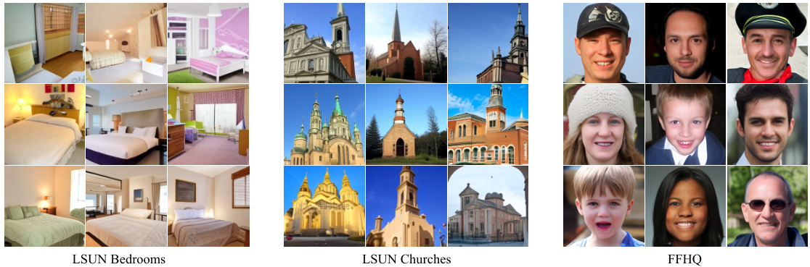
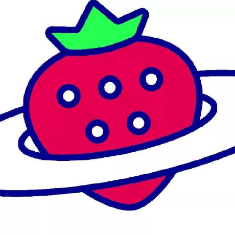
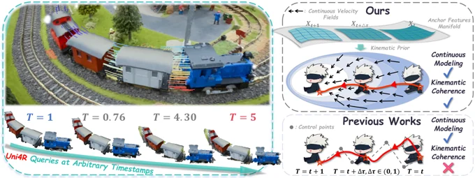
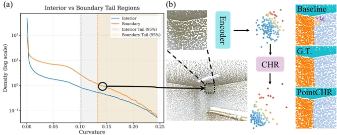

NeurIPS 2026 · Poster
Bernoulli Flow Models
Self-consistent generative modeling for binary data.

I am a PhD student at Macau University of Science and Technology.
My research interests include generative modeling, computer vision, and semantic communications. I work on modeling and generating discrete data, and on using diffusion models to improve communication over noisy channels.
NeurIPS, 2026 · Poster
A continuous Bernoulli probability path with closed-form reverse transitions over arbitrary time intervals for efficient binary-data generation.

NeurIPS, 2026
Uni4R learns continuous velocity fields with optimal transport and ODE integration to unify 4D reconstruction and point tracking at arbitrary timestamps.

ICML, 2026
Curvature-guided hyperbolic rectification improves the representation of sparse, high-curvature regions for fine-grained point cloud analysis.
IEEE ICC, 2025
A score-based diffusion model that aligns its denoising process with digital channel noise to improve semantic reconstruction across varying channel conditions.
PhD student, Artificial Intelligence
M.S. in Information Technology
B.S. in Computer Science and Technology